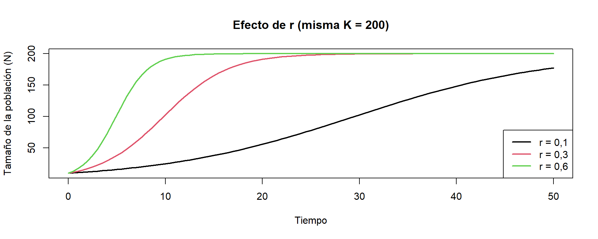
Clase 2.4 — Denso-dependencia y capacidad de carga
11/2026
Clase 2.4 — Crecimiento logístico
Carlos Iván Espinosa Universidad Técnica Particular de Loja
Al finalizar esta sesión, podrás:
En la hoya de Loja, una población de Cedrela montana ha sido monitoreada durante 20 años:
¿Por qué la población dejó de crecer? ¿Qué la está limitando?
En un estudio clásico, se monitoreó una población de gorriones durante 36 años:
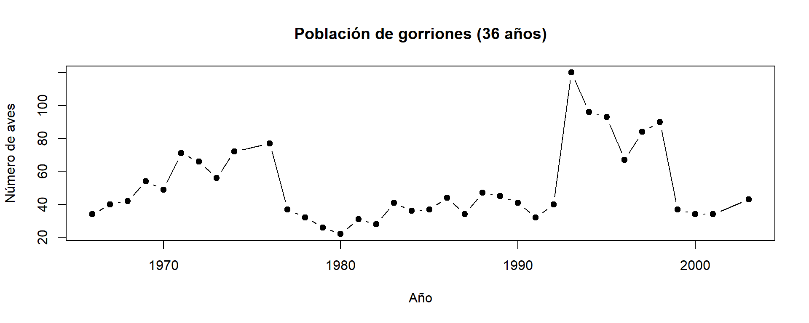
La población no crece indefinidamente: fluctúa alrededor de un valor.
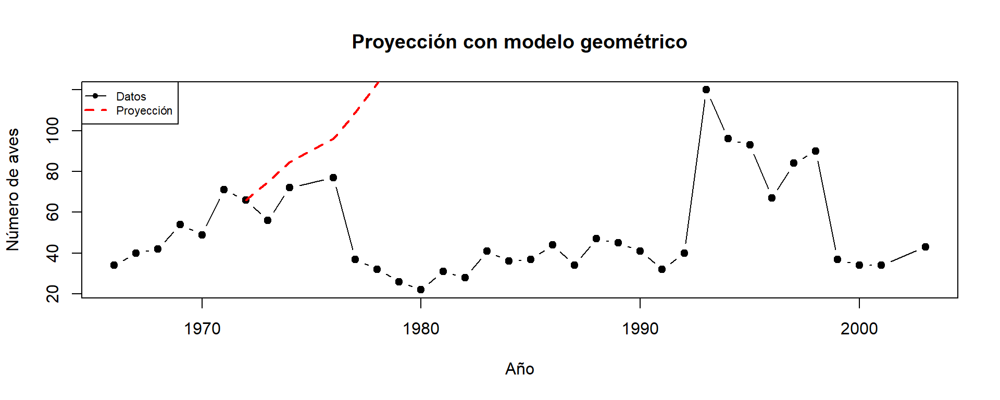
El modelo geométrico se aleja de lo que sucede en realidad. Hay factores que regulan la población.
Antes de modelar, siempre hay que mirar los datos
Si la población se estabiliza, fluctúa alrededor de un valor, o forma ciclos, el modelo denso-independiente no es adecuado. Necesitamos un modelo que incluya la denso-dependencia.
La denso-dependencia es el efecto que tiene el tamaño de la población sobre su propia tasa de crecimiento.
A medida que la población crece:
Consecuencia: la tasa de crecimiento disminuye a medida que la población se acerca a su límite.
Los ecólogos consideran que la denso-dependencia negativa es una característica de una población bajo competencia intraespecífica: los individuos de la misma especie compiten por recursos escasos compartidos.
Ejemplos locales:
Partimos del modelo geométrico:
\[N_{t+1} = \lambda N_t\]
Descomponemos \(\lambda = 1 + R_d\):
\[N_{t+1} = N_t(1 + R_d) = N_t + R_d N_t\]
La tasa de incremento es \(N_t\) (el tamaño previo) más el cambio proporcional \(R_d N_t\).
Cada individuo ejerce un pequeño efecto negativo sobre la tasa de crecimiento, representado por \(\alpha\).
El factor de escalamiento debe cumplir:
El factor que cumple esto es:
\[\text{Incremento per cápita} = r_d(1 - \alpha N_t)\]
Resolvemos para \(N\) cuando el incremento per cápita es cero:
\[0 = r_d(1 - \alpha N_t)\] \[N_t = \frac{1}{\alpha}\]
Ese valor es la capacidad de carga \(K\):
\[K = \frac{1}{\alpha}\]
Sustituyendo \(1/\alpha\) por \(K\):
\[N_{t+1} = N_t + r_d \left(1 - \frac{N_t}{K}\right) N_t\]
Esta es la versión discreta del modelo logístico, para poblaciones con reproducción estacional.
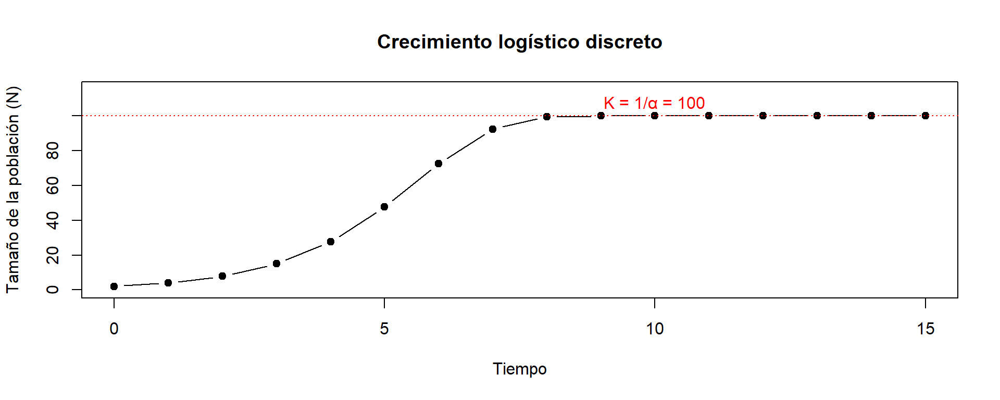
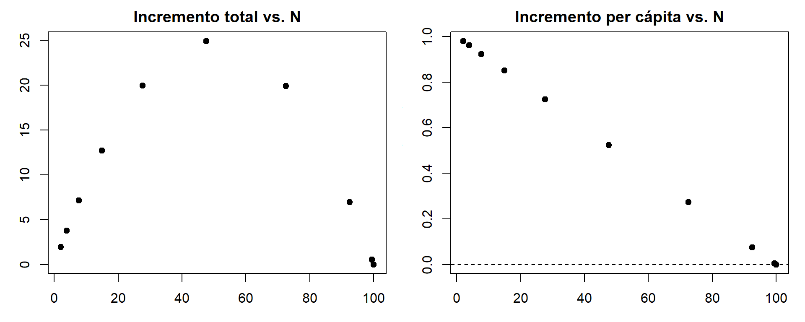
El incremento total es máximo en \(N = K/2\) (punto de inflexión). El incremento per cápita disminuye con \(N\).
Graficamos el incremento per cápita (\(\lambda_t = N_{t+1}/N_t\)) contra la densidad (\(N_t\)):
\[\lambda_t = a + b N_t\]
Donde:
A partir de la regresión:
Supongamos que tenemos estos datos:
| Año | \(N_t\) | \(N_{t+1}\) | \(\lambda_t\) |
|---|---|---|---|
| 1 | 10 | 20 | 2,00 |
| 2 | 20 | 36 | 1,80 |
| 3 | 36 | 61 | 1,69 |
| 4 | 61 | 95 | 1,56 |
| 5 | 95 | 133 | 1,40 |
| 6 | 133 | 166 | 1,25 |
| 7 | 166 | 187 | 1,13 |
| 8 | 187 | 196 | 1,05 |
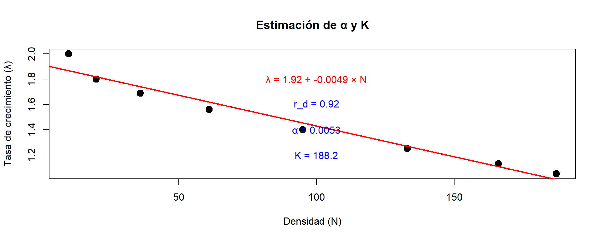
\(r_d \approx 1,1\); \(\alpha \approx 0,005\); \(K \approx 200\).
Si la relación entre \(\lambda_t\) y \(N_t\) no es lineal, ¿qué implicaciones tiene para el modelo logístico?
El modelo logístico continuo se escribe:
\[\frac{dN}{dt} = r \cdot N \cdot \left(1 - \frac{N}{K}\right)\]
Donde:
Es la versión continua del modelo discreto que acabamos de derivar.
La solución es una curva sigmoidea (forma de S):
\[N_t = \frac{K}{1 + \left(\frac{K - N_0}{N_0}\right) \cdot e^{-rt}}\]
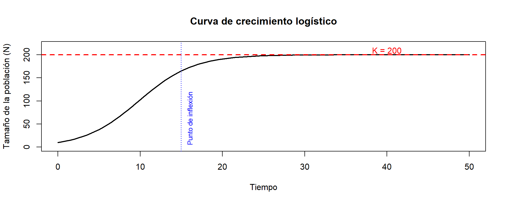
El punto de inflexión es donde la tasa de crecimiento es máxima.

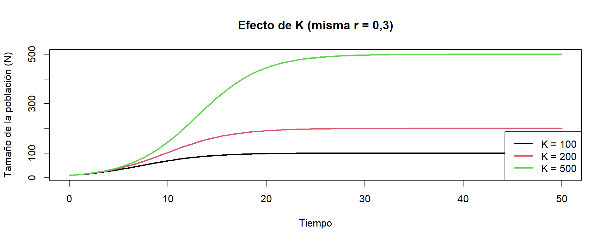
\(r\) controla la velocidad; \(K\) controla el tamaño máximo.
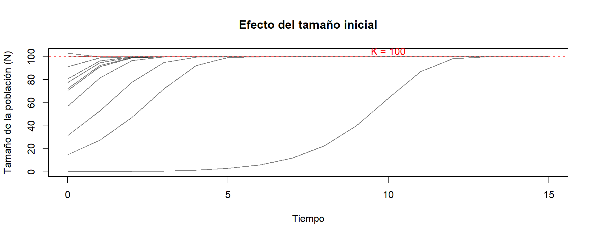
\(K\) funciona como un atractor: tanto si la población empieza por debajo como por encima de \(K\), tiende a \(K\).
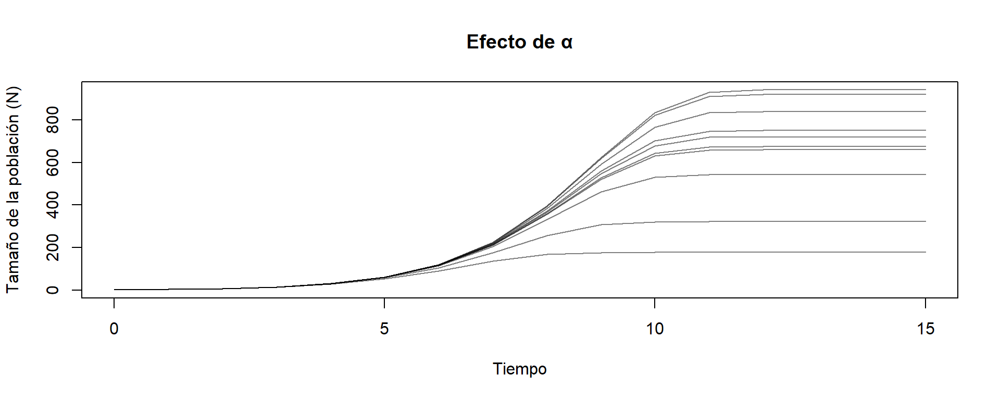
\(\alpha\) determina el tamaño final: a menor \(\alpha\), mayor \(K\).
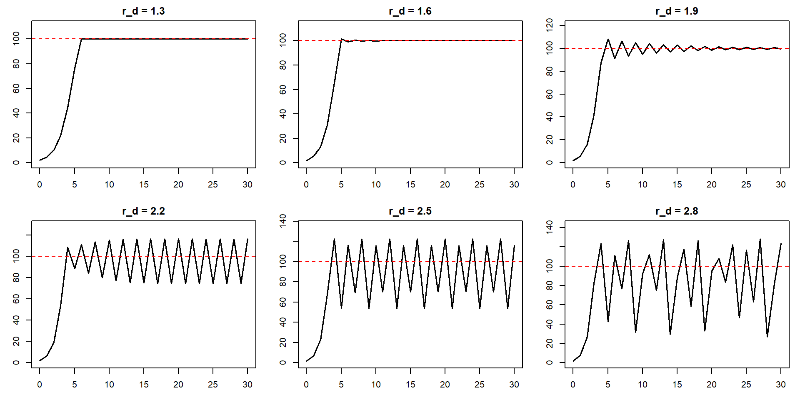
Robert May demostró que dinámicas aparentemente aleatorias pueden surgir de reglas deterministas simples.
Con \(r_d = 2,5\), ¿qué tipo de dinámica observas? ¿Y con \(r_d = 2,8\)?
¿Qué implicaciones tiene esto para la predicción de poblaciones?
Regla práctica: si los datos muestran estabilización, usa denso-dependiente.
Sí, y es muy útil.
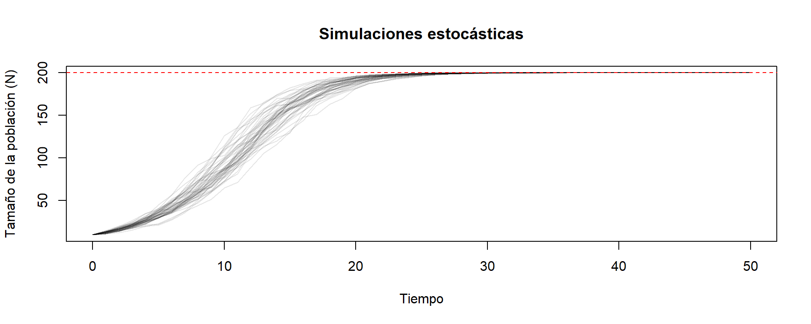
Conexión con Loja
Estas herramientas se usan para evaluar la viabilidad de Cedrela montana en fragmentos de bosque de la hoya de Loja, o de Tremarctos ornatus en el Podocarpus.
Simula una población con \(K = 200\) y \(r = 0,3\), pero con un evento catastrófico en el año 20 que reduce la población a la mitad.
¿Cuánto tarda en recuperarse? ¿Qué pasa si \(K\) se reduce a 100 después de la catástrofe?
¿Qué especie de Loja conoce que esté limitada por la densidad?
¿Cómo estimarían su capacidad de carga?
Gracias.